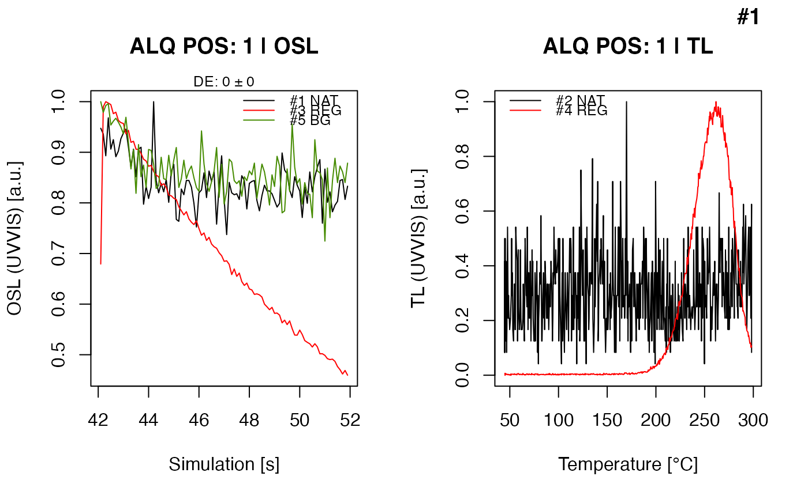
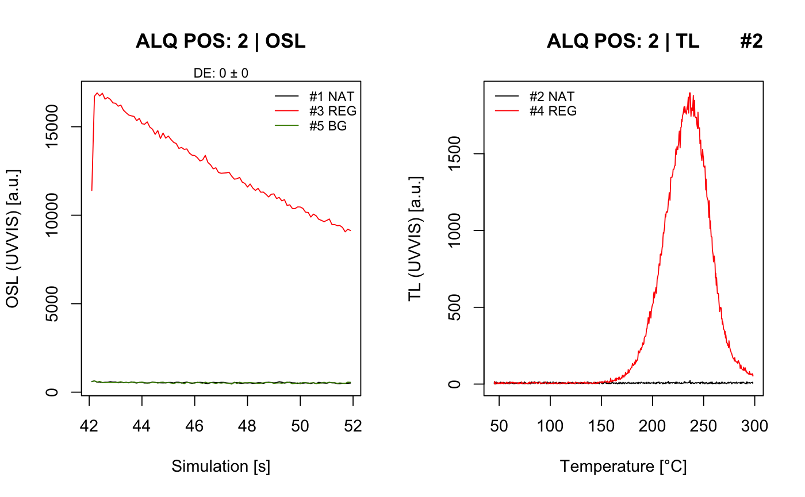

R/analyse_Al2O3C_Measurement.R
analyse_Al2O3C_Measurement.RdThe function provides the analysis routines for measurements on a FI lexsyg SMART reader using Al2O3:C chips according to Kreutzer et al., 2018
analyse_Al2O3C_Measurement(
object,
signal_integral = NULL,
dose_points = c(0, 4),
recordType = c("OSL (UVVIS)", "TL (UVVIS)"),
calculate_TL_dose = FALSE,
irradiation_time_correction = NULL,
cross_talk_correction = NULL,
travel_dosimeter = NULL,
test_parameters = NULL,
verbose = TRUE,
plot = TRUE,
...
)RLum.Analysis (required): measurement input
numeric (optional): signal integral, used for the signal
and the background. Example: c(1:10) for the first 10 channels.
If nothing is provided the full range is used
numeric (with default): vector with dose points, if dose points are repeated, only the general pattern needs to be provided. Default values follow the suggestions made by Kreutzer et al., 2018
character (with default): input curve selection, which is passed to
function get_RLum. To deactivate the automatic selection set the argument to NULL
logical (with default): Enables/disables experimental dose estimation based on the TL curves. Taken is the ratio of the peak sums of each curves +/- 5 channels.
numeric or RLum.Results (optional):
information on the used irradiation time correction obtained by another experiments.
I a numeric is provided it has to be of length two: mean, standard error
numeric or RLum.Results (optional):
information on the used irradiation time correction obtained by another experiments.
If a numeric vector is provided it has to be of length three:
mean, 2.5 % quantile, 97.5 % quantile.
numeric (optional): specify the position of the travel dosimeter (so far measured a the same time). The dose of travel dosimeter will be subtracted from all other values.
list (with default):
set test parameters. Supported parameters are: TL_peak_shift All input: numeric
values, NA and NULL (s. Details)
logical (with default): enable/disable verbose mode
logical (with default): enable/disable plot output, if object is of type list,
a numeric vector can be provided to limit the plot output to certain aliquots
further arguments that can be passed to the plot output, supported are norm, main, mtext,
title (for self-call mode to specify, e.g., sample names)
Function returns results numerically and graphically:
-----------------------------------
[ NUMERICAL OUTPUT ]
-----------------------------------
RLum.Results-object
slot:
@data
| Element | Type | Description |
$data | data.frame | the estimated equivalent dose |
$data_table | data.frame | full dose and signal table |
test_parameters | data.frame | results with test parameters |
data_TDcorrected | data.frame | travel dosimeter corrected results (only if TD was provided) |
Note: If correction the irradiation time and the cross-talk correction method is used, the De
values in the table data table are already corrected, i.e. if you want to get an uncorrected value,
you can use the column CT_CORRECTION remove the correction
slot:
@info
The original function call
------------------------
[ PLOT OUTPUT ]
------------------------
OSL and TL curves, combined on two plots.
Working with a travel dosimeter
The function allows to define particular aliquots as travel dosimeters. For example:
travel_dosimeter = c(1,3,5) sets aliquots 1, 3 and 5 as travel dosimeters. These dose values
of this dosimeters are combined and automatically subtracted from the obtained dose values
of the other dosimeters.
Calculate TL dose
The argument calculate_TL_dose provides the possibility to experimentally calculate a TL-dose,
i.e. an apparent dose value derived from the TL curve ratio. However, it should be noted that
this value is only a fall back in case something went wrong during the measurement of the optical
stimulation. The TL derived dose value is corrected for cross-talk and for the irradiation time,
but not considered if a travel dosimeter is defined.
Calculating the palaeodose is possible without any TL curve in the sequence!
Test parameters
TL_peak_shift numeric (default: 15):
Checks whether the TL peak shift is bigger > 15 K, indicating a problem with the thermal contact of the chip.
stimulation_power numeric (default: 0.05):
So far available, information on the delivered optical stimulation are compared. Compared are the information from the first curves with all others. If the ratio differs more from unity than the defined by the threshold, a warning is returned.
0.2.6
Kreutzer, S., 2023. analyse_Al2O3C_Measurement(): Al2O3:C Passive Dosimeter Measurement Analysis. Function version 0.2.6. In: Kreutzer, S., Burow, C., Dietze, M., Fuchs, M.C., Schmidt, C., Fischer, M., Friedrich, J., Mercier, N., Philippe, A., Riedesel, S., Autzen, M., Mittelstrass, D., Gray, H.J., Galharret, J., 2023. Luminescence: Comprehensive Luminescence Dating Data Analysis. R package version 0.9.23. https://CRAN.R-project.org/package=Luminescence
Kreutzer, S., Martin, L., Guérin, G., Tribolo, C., Selva, P., Mercier, N., 2018. Environmental Dose Rate Determination Using a Passive Dosimeter: Techniques and Workflow for alpha-Al2O3:C Chips. Geochronometria 45, 56-67.
##load data
data(ExampleData.Al2O3C, envir = environment())
##run analysis
analyse_Al2O3C_Measurement(data_CrossTalk)
#> Warning: TL peak shift detected for aliquot position 1! Check curves!
#> [analyse_Al2O3_Measurement()] #1 DE: 0 ± 0

#> ... (#1 | ALQ POS: 1)
#> [analyse_Al2O3_Measurement()] #2 DE: 0 ± 0

#> ... (#2 | ALQ POS: 2)
#>
#> [RLum.Results-class]
#> originator: analyse_Al2O3C_Measurement()
#> data: 3
#> .. $data : data.frame
#> .. $data_table : data.frame
#> .. $test_parameters : data.frame
#> additional info elements: 1